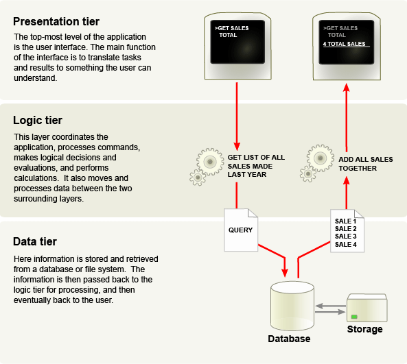

Welcome to our tutorial everyone!
In this tutorial you will learn how to produce a simple n-Tier application in ASP.NET C#. This application will consist of three layers:
- The presentation layer which will display your content; in this case your .aspx file is your presentation layer.
- Your business logic layer - which consists of your classes and logic to get your data from the database. Getting your data from the database is done by using pass-by-reference - more information on pass-by-reference in c# can be found at http://msdn.microsoft.com/en-us/library/14akc2c7.aspx.
In the business logic layer, you create classes that match your database tables - in this tutorial we are using a PersonInfo class that resembles the table in the database.
- Finally the last layer in our n-Tier application is the data layer which is your database.
Before you being this tutorial here is some SQL code for the table you will need in this tutorial:
CREATE TABLE tblPerson
(
PersonID INT NOT NULL,
FirstName VARCHAR(30),
LastName VARCHAR(30),
PRIMARY KEY(PersonID)
);
Also, here is a visual representation of a 3-tier structure - with descriptions for each "layer", and how they interact with each-other:
(Wikipedia, 2012)
If you are up to the challenge, you can begin the tutorial by proceeding to steps 1 through 5...